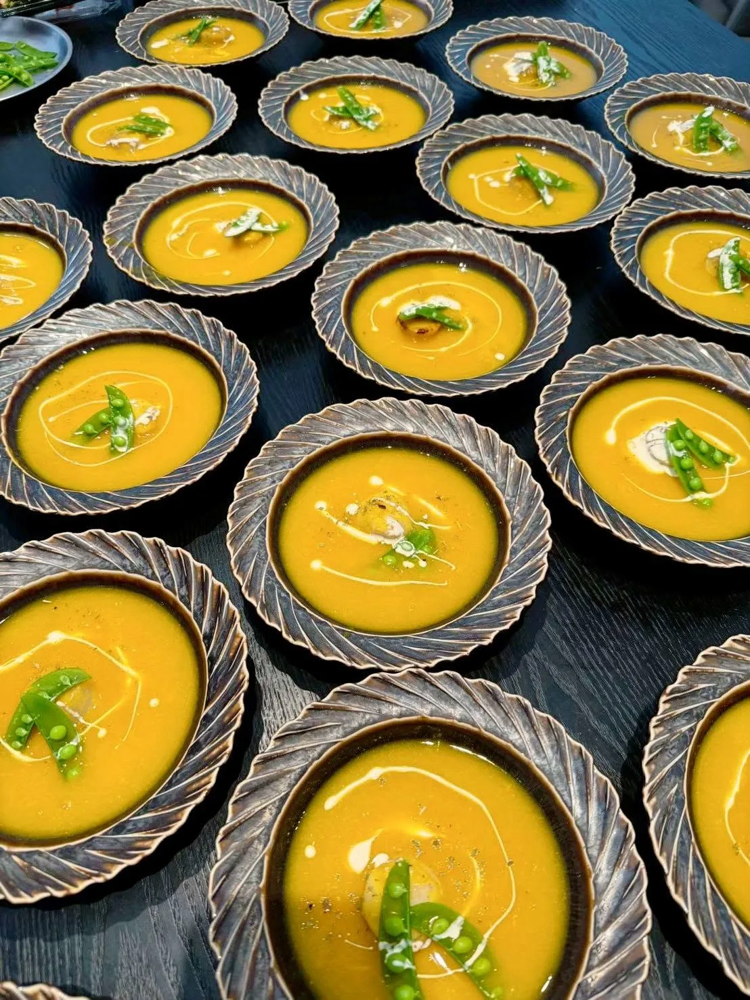

紅燒要加糖、照燒有味醂、鹹焦糖越來越流行。甜與鹹看似相反，但在料理中卻是最常搭配的一組味道。
最後更新：2026 年 10 月 11 日
味覺研究指出，甜味與鹹味之間存在互相抑制的現象：加入適量的糖，會讓鹹味顯得柔和、不那麼尖銳；反過來，一點點鹽也會讓甜味更明顯。這就是為什麼甜點常加鹽、鹹食也常加糖的原因。
中式的紅燒與滷味，用冰糖或砂糖平衡醬油的鹹；日式的照燒醬，以醬油與味醂（含糖）調出光澤與甘甜；鹹焦糖則是在焦糖的甜裡加入鹽，帶出更深的風味。這些做法的共通點，是讓鹹味圓潤而不衝。
糖除了調味，也會促進焦糖化與表面的光澤，讓紅燒肉與烤魚呈現漂亮的色澤。但用量要小心，過量的糖會讓整道菜甜膩，也容易在高溫下燒焦發苦。
調味時，糖通常是「少量、提味」的角色，目標不是讓人吃出甜，而是讓鹹味更完整。可以先在調味的後段少量加入，邊加邊試，直到鹹味變得柔和、而又不出現明顯的甜味為止。
一場宴席若一道道都偏甜或都偏鹹，味覺會很快疲乏。舒苑在安排菜單時，會讓甜鹹的菜色交錯出現，並考慮賓客的年齡與口味偏好，你可以從菜單方案了解不同菜系的設計。
糖能平衡醬油的鹹，讓味道更圓潤，同時幫助上色與形成光澤。
少量糖可以讓鹹味顯得柔和，但無法真正降低鹽量；若過鹹，仍以稀釋為主，再微調甜味。
少量鹽能抑制單調的甜膩，讓甜味更鮮明、層次更豐富，鹹焦糖就是常見例子。
提供活動日期、人數與場地，我們將提供最適合的私廚方案與報價建議。